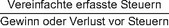

Soweit nichts anderes bestimmt ist, gelten für die Anwendung der §§ 84 bis 86 die folgenden Definitionen:
- 1.
Ein länderbezogener Bericht (§ 138a der Abgabenordnung) ist qualifiziert, wenn dieser mit einem qualifizierten Konzernabschluss erstellt wurde. Ein qualifizierter Konzernabschluss ist einer der folgenden Abschlüsse:
- a)
die für Konsolidierungszwecke an konzerneinheitliche Ansatz- und Bewertungsregeln angeglichenen Jahresabschlüsse der Geschäftseinheiten vor Konsolidierungsanpassungen und Zwischenergebniseliminierungen und ohne Anpassungen im Sinne des § 15 Absatz 1 Satz 2, sofern diese nach § 15 Absatz 1 Satz 3 nicht zulässig sind, oder
- b)
die Jahresabschlüsse der Geschäftseinheiten, sofern diese nach einem anerkannten Rechnungslegungsstandard (§ 7 Absatz 4) oder einem zugelassenen Rechnungslegungsstandard (§ 7 Absatz 37) aufgestellt werden und die in diesen Abschlüssen enthaltenen Informationen auf der Grundlage dieses Rechnungslegungsstandards fortgeführt werden und verlässlich sind, oder
- c)
im Fall einer Geschäftseinheit, die allein aus Gründen der Größe oder der Wesentlichkeit nicht in den Konzernabschluss der Unternehmensgruppe einbezogen wird (§ 4 Absatz 1 Satz 1 Nummer 2), der Jahresabschluss, der für die Erstellung des länderbezogenen Berichts der Unternehmensgruppe verwendet wird.
- 2.
Die Umsatzerlöse entsprechen der Summe aus den Umsatzerlösen und sonstigen Erträgen, wie sie im qualifizierten länderbezogenen Bericht ausgewiesen sind.
- 3.
Die vereinfacht erfassten Steuern entsprechen dem im qualifizierten Konzernabschluss der Unternehmensgruppe ausgewiesenen Ertragsteueraufwand, nach Bereinigung aller nicht erfasster Steuern und ungewisser Steuerrückstellungen.
- 4.
Der Gewinn oder Verlust vor Steuern ist das Jahresergebnis vor Steuern, wie es im qualifizierten länderbezogenen Bericht ausgewiesen ist, erhöht um einen nicht realisierten Nettoverlust aus der Bewertung zum beizulegenden Zeitwert.
- 5.
Ein nicht realisierter Nettoverlust aus der Bewertung zum beizulegenden Zeitwert ist die Summe aller Verluste, verringert um etwaige Gewinne, die auf einer Änderung des beizulegenden Zeitwerts von Eigenkapitalbeteiligungen im Sinne des § 20 Absatz 1 Nummer 1 beruhen. Dies gilt nur, wenn der Verlust 50 Millionen Euro für ein Steuerhoheitsgebiet übersteigt.
- 6.
Der vereinfacht berechnete effektive Steuersatz für ein Steuerhoheitsgebiet wird wie folgt berechnet:

- 7.
Der Übergangssteuersatz beträgt für die Geschäftsjahre, die in den Jahren 2023 und 2024 beginnende 15 Prozent, für im Jahr 2025 beginnende 16 Prozent und für im Jahr 2026 beginnende 17 Prozent.
- 8.
Qualifizierte Gesellschafter einer obersten Muttergesellschaft, die eine transparente Einheit ist, sind die in § 69 Absatz 1 Satz 1 Nummer 1 bis 3 genannten. Qualifizierte Gesellschafter einer obersten Muttergesellschaft, die einem Dividendenabzugsregime unterliegen, sind die in § 70 Absatz 1 Satz 1 Nummer 1 bis 3 genannten.